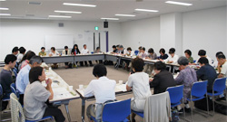

|
|

■議 題
安心してくらせる社会を実現していきましょう、持続可能な社会づくり、反核平和の取り組み、東日本大震災と東電福島第一原発事故、食の安全・安心は、引き続き、消費者の第一の願いです。消費者の権利の確立 の5項目と、みんなで取り組んでいくこと として、様々な課題について考え合いました。 （1）司会、大会アピール提案の担当団体認しました。 （2）オープニング企画について （3）記念講演のタイトルは講師の意見を反映させて決定し、チラシ作成を進めることを確認しました。 （4）大会スローガンは、「つながろう、ふみだそう、持続可能な社会に向けて！」としました。 各団体からの要望事項をとりまとめ、引き続き御意見をお待ちすることにしました。 分科会ごとに責任団体・担当団体で顔合わせ、内容について話し合いました。 |